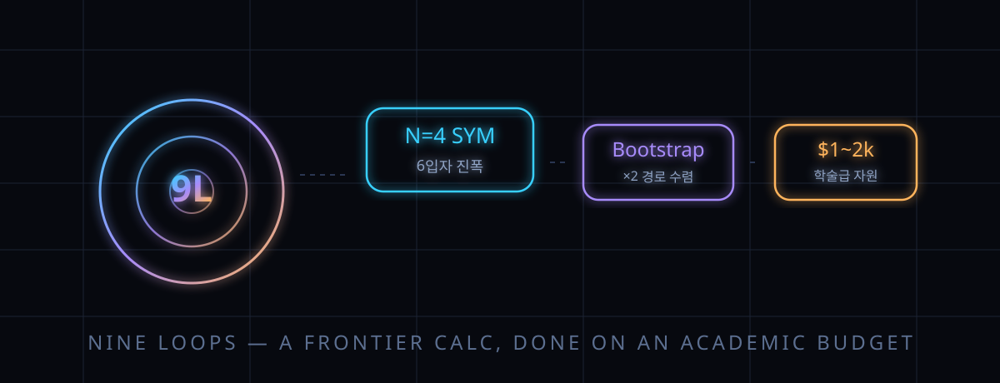

물리학자가 AI에 건 "9루프를 풀어라" — 한 달 만에 끝난 계산의 진짜 의미 (HackerNews 101표)

결론부터: 지난 8월, 이론물리학 출신 과학저술가가 AI 업계에 공개 조건을 걸었다. "내 옛 분야인 산란 진폭에서 미해결 문제를, 대학 연구실이 쓰는 컴퓨터 규모로 풀어보라." 2026년 9월 25일, Anthropic이 그 글의 후기를 실었다. Claude가 N=4 초대칭 양-밀스 이론의 6입자 산란 진폭을 9루프까지 계산했다는 내용이다. 전문가는 "인정할 만한 성과, 다만 물리학의 새로운 원리를 발견한 것은 아니다"라고 정리했다.
HackerNews에서는 "드디어 벤치마크가 아닌 진짜 연구 과제"라는 반응과 "회사 블로그에 실린 회사 비용의 홍보"라는 경계가 동시에 달렸다.
이 글은 과대포장도 과소평가도 빼고, 무엇이 실제로 증명됐고 무엇이 아직 증명되지 않았는지의 경계선을 따라간다.
30초 요약
| 항목 | 내용 |
|---|---|
| 무슨 일 | Anthropic이 2026-09-25 게스트 포스트로 공개한 계산. 목표는 '플래너 N=4 SYM의 6입자(육각형) 진폭을 9루프까지'. 도전자는 물리학자 출신 저술가 매트 폰 히펠 |
| 도전 조건 | "AI 회사가 나를 놀래키려면 내 옛 분야를 건드려야 한다. 학자가 쓰는 자원만으로 computational 임계로 여겨지던 벽이 사실은 벽이 아님을 보여달라" — 그는 N=8 초중력과 9루프 N=4 SYM 중 후자를 지목했다 |
| 방식 | Anthropic 연구진(물리학자 2명)이 'Claude Science'라는 장시간 과학 계산 환경에 짧은 1회 지시로 투입. 이후 지시는 "계속 진행하라"에 가까웠다고 포스트에 적혔다 |
| 검증 | 이 분야의 정립 방법들을 만든 SLAC·스탠퍼드의 랜스 딕슨이 독립 검증에 나섰다. 관련 '형태 인자' 계산으로 되翻訳해 대조하는 방식이었고, 부합은 공개 데이터 기준 10만 개가 넘는 계수 단위까지 확인됐다 |
| 비용 | Anthropic 측 추정으로 어느 쪽 경로든 이용자 비용 약 1,000~2,000달러. 직접 부트스트랩 경로의 순수 계산분은 약 100달러(CPU 96개, 약 1주) — 회사 추정치이지 독립 감사는 아니다 |
| 동시 경쟁 | 9월 17일, 다른 연구자 3인(He·Jing·Li)이 GPT 계열 모델의 보조로 9루프 '심볼' 부분을 Zenodo에 공개 발표했다. Frontier 문제가 실제로 여러 팀에서 동시에 열리고 있었음을 시사한다 |
1. 무엇이 터졌나
산란 진폭(scattering amplitude)은 입자들이 충돌한 뒤 어떤 각도로 튀어 나갈지를 결정하는 함수다. 뭘 뭉치면 '루프'라는 고리 모양의 도형 전개식으로 전개되는데, 루프가 하나 늘 때마다 항의 개수가 조합 폭발로 늘어난다. 이 분야의 교과서적 난제가 N=4 SYM(Super Yang–Mills)라는 이론의 6입자 진폭을 9루프까지 쓰는 일이었다. 계산 자체가 불가능한 건 아니지만, 개인 연구실의 컴퓨팅 자원과 인력으로는 손댈 엄두가 안 나는 문제였다. 벽의 정체는 '아이디어'가 아니라 '컴퓨터와 시간'인 지점이었다.
폰 히펠이 노린 것도 정확히 거기였다. 수학적 번뜩임이 아니라 계산 자원 자체가 문제인 과제라야 AI의 실력을 공정하게 잴 수 있다고 그는 판단했다. 아이디어는 발견 전까지 난이도를 알 수 없지만, 계산량은 대체로 예측 가능하기 때문이다.
Anthropic의 설명에 따르면 진행 과정은 대략 이렇다: 모델에게 진폭 계산 과제를 던지고, "몇 시간 자리 비우니 계속 진행, 4~6시간마다 보고" 같은 지시만 이어 붙였다. 산출물은 두 갈래였다. 하나는 가능한 답의 후보 공간을 크게 잡아 물리·수학적 제약으로 잘라내는 '진폭 부트스트랩'으로, Python과 SymPy를 쓰며 CPU 96개를 약 일주일 돌렸다. 다른 하나는 형태 인자(form factor)라는 관련 대상과 반대(pairing) 쌍대성을 경유하는 길이었다. 두 경로가 같은 답에 수렴했다는 진술이 포스트에 담겼다.
2. 왜 대단한 얘기인가
① '자동화'의 단위와 시간이 바뀌었다
기존 AI 성과 대부분은 이미 답이 정해진 문제(수학 올림피아드, 코드 대회)였다. 이 계산은 달랐다: 공개 문헌에는 방법의 설명이 있으나 코드는 없고, 절차는 한 군데만 틀어져도 전체가 무너지는 연약한 것이라, 모델이 문헌만 보고 코드를 재구성하고 일주일짜리 계산을 끝까지 끌고 가야 했다. 검증자 딕슨이 강조한 대목도 '아이디어의 신박함'이 아니라 '취약한 절차를 감독 없이 완주한 실행력'이었다.
② '낮게 매달린 열매'의 재평가
폰 히펠의 최종 정리: 이 분야는 전문가들이 생각한 것보다 손이 덜 간 문제가 많았다. 모든 벽이 벽인 건 아니었고, 상당수는 '누군가의 1년'을 기다리고 있었을 뿐이라는 것이다. 그는 이것이 분야 연구 계획의 재수립을 요구하는 신호라고 썼다.
③ 학술 계산 비용의 실물이 공개됐다
AI 연구 수행 비용이 '1,000~2,000달러' 단위로 공론화된 드문 사례다. 학부 연구생 인건비와 비교되기 시작했고, 이 숫자 하나 때문에 "논문 저자란에 AI를 쓰게 될 날이 멀지 않았다"는 논의가 따라 붙었다.
3. 바로 써먹기 — 이 사건에서 연구 워크플로 설계 배점
| 관찰된 설계 요소 | Anthropic 사례의 모습 | 내 연구·업무에 옮길 때 |
|---|---|---|
| 검증 가능한 목표 설정 | "9루프 진폭을 계산하라"는 단일 문장 + 독립 검증 경로(형태 인자 대조)가 애초에 존재 | AI에 맡길 과제는 '답이 틀렸을 때 자동으로 드러나는' 구조로 정의할 것 |
| 장시간 자율 실행 | 사람 부재 중 "4~6시간마다 진행 보고"로 수 시간~수 일 세션 유지 | 일회성 채팅이 아니라 주기 보고·중단 조건이 명시된 에이전트 세션 설계 |
| 경로 복수화 | 직접 부트스트랩과 쌍대성 경유, 두 경로가 같은 답 수렴 | 핵심 계산은 독립 알고리즘 2개로 교차 확인 — AI 산출물의 기본 방어선 |
| 공개 산출물 | 계수 데이터·체크섬·검증 기록을 기계 가독 형식으로 별도 연구 페이지에 공개 | AI 결과물도 원시 데이터와 재현 스크립트 없이 결론만 남기면 신뢰 불가 |
한 줄 요약. 중요한 건 모델이 얼마나 천재냐가 아니라, 사람의 감독 없이도 '검증 가능한 절차' 안에 과제를 가둘 수 있느냐다.
4. 해외 반응 쟁점
① 홍보 글 논란. 공개 채널의 발표가 회사 자체 블로그라는 점을 두고 "IPO 직전 회사 홍보와 연구 성과 발표의 경계가 지워졌다"는 비판이 HN 상위를 차지했다. 저술가는 "고료를 받고 쓴 글이며 광고는 아니다"라고 스스로 공개했다.
② '심볼'과 '함수'의 함정. 기술적 세부에 정통한 댓글들은 대부분 이 구별에서 갈렸다. 심볼(symbol)은 진폭의 구조 중 일부를 보존한 근사적 표현이고, 상수항 등이 빠진다. 경쟁 팀의 발표물 README도 "심볼에 안 보이는 정보(제타 상수류)를 담지 않는다"고 명시한다. 경쟁 결과와 교차 검증된 건 어디까지나 '심볼끼리'라는 경계가 계속 인용됐다.
③ 동시 발표가 뜻하는 것. "Claude라서 풀 수 있다"는 서사는 9월 17일 Zenodo에 올라온 경쟁 팀의 결과(역시 AI 보조)로 약해졌다. 반대로 이 사실은 "문제가 진짜 프런티어였고, 지금 이 순간 물리학계 여러 책상에서 같은 계산이 돌고 있다"는 방증으로도 읽힌다.
④ 저자 논문의 홍수. 관련 논의란에서는 "hep-th 아카이브에 LLM 생성 논문의 쓰레기가 쏟아지는 판에, 이 정도면 검증을 갖춘 드문 사례"라는 자성이 달렸다. 도구가 아니라 검증 절차가 신뢰를 만든다는 문장으로 수렴했다.
5. 마시기 전 주의
- 발표 주체가 Anthropic이고 게스트 포스트에 대가가 오갔다. 모델 로그 등 원자료는 저술가도 열람하지 못했다 — 신뢰는 절차가 아니라 인물 기반인 단계다.
- N=4 SYM은 현실 입자를 직접 기술하는 이론이 아니다. 대칭이 많아 계산을 시험대에 올리기 좋은 '장난감 모형'이고, 여기서의 성과가 LHC 데이터 해석 속도로 이어진다는 보장은 없다.
- 비용 1,000~2,000달러는 회사 추정이다. 재현 시도 팀이 나오기 전까지 시장 가격은 아니다.
- 전체 함수 계산은 한 번만 수행됐고, 심볼→함수 확장에는 가정이 하나 더 깔린다. "전부 검증됐다"로 읽으면 안 된다.
- 논문·보고서에 이 사건을 인용할 땐 회사 발표와 독립 검증을 구분해 적을 것.
바로 가기
- Anthropic 게스트 포스트 — 'Yes, Claude can do Nine Loops' 원문 (2026-09-25)
- 도전자 매트 폰 히펠의 개인 블로그 후기 — 고료·검증 확신도 문답
- HackerNews 논쟁 스레드 — 홍보 논란과 심볼/함수 구분
Claude가 실험실에서 효소를 자율 발견한 사건 — 이번 9루프가 '계산의 완주'였다면, 저쪽은 '실험의 자율성'이다. AI 과학의 두 축을 세트로 읽기.
AI 속보 시리즈 — 해외에서 먼저 검증된 소식만 골라 숫자와 한계까지.
도구 코너 — 내 PC로 도는 AI 모델 체크 (준비 중).